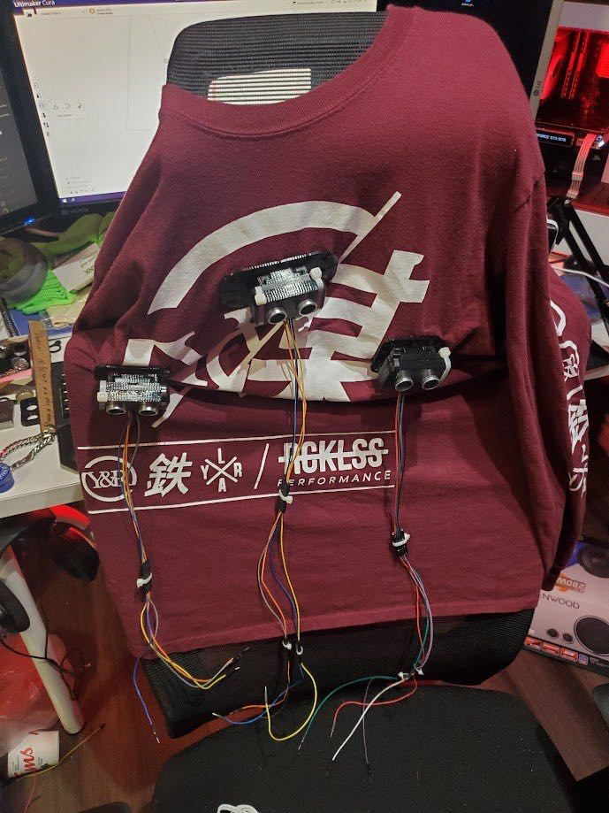
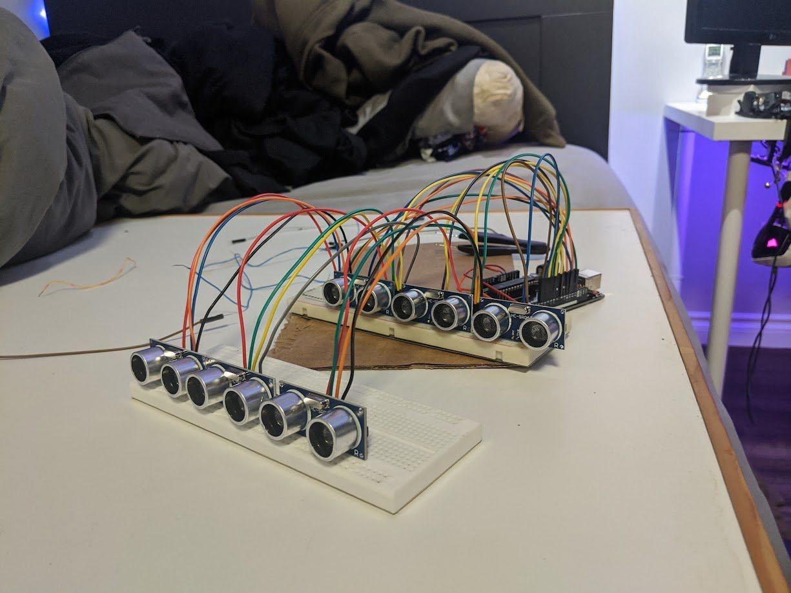
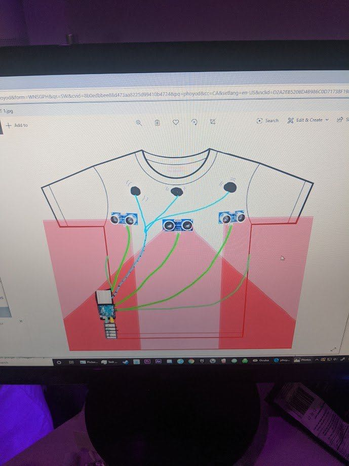

Overview
In Grade 11 I had a shower thought about a system that would warn blind people about large incoming obstacles too far away to be felt with a cane. When COVID started later that year, I decided to start engineering it and use it as my upcoming Grade 12 capstone project. I worked on it through the summer and the following school year until my capstone deadline in December.
Prototyping
I started by buying an Arduino along with an array of ultrasonic sensors and vibration motors. I set these up on a series of breadboards and test rigs to make sure they were giving accurate measurements and that my code worked as expected before mounting anything to a shirt.


Next, I designed hot-swappable 3D-printed mounts for the ultrasonic sensors that could be sewn to the shirt, measuring how much the sensors' fields of view overlapped and making sure they didn't interfere with each other. My first mount design overlooked that the zip ties holding the sensors blocked the sensor pins, so I redesigned it to use two zip ties that stay out of the way, with a smaller mounting plate that was easier to sew on.
Assembly and testing
After sewing the sensor mounts to the shirt, I modified an existing Arduino case design to clip onto my belt and ran wiring from the sensors down to it. The vibration motors came with adhesive strong enough to hold them to the shirt without any extra sewing or glue.


When I started testing the complete system, the Arduino was reading the correct values but the motors weren't vibrating correctly. After painstakingly checking the code many times and every one of the ~150 wires, I found a single wire with an unstable connection and replaced it. The system then worked well, but still needed tuning of sensor responsiveness and vibration strength to feel as intuitive as possible. Finally, I recorded a demonstration, shown below, in which I identify the positions of walls and obstacles around me as I walk through my home.